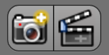

OpenGL 渲染¶
OpenGL rendering uses the 3d View’s drawing for quick preview renders.
This allows you to inspect your animatic (for object movements, alternate angles, etc.).
This can also be used to preview your animations - in the event your scene is too complex for your system to play back in real-time in the 3D视图.
You can use OpenGL to render both images and animations.
Below is a comparison between the OpenGL render and a final render using the Blender Internal engine.
{kind=link}
{kind=link}
Tip
Showing Only 渲染ed Objects
To access this option, enable the Only 渲染 in the Display Panel.
While this option is not specific to OpenGL rendering, its often useful to enable, since it removes data such as rigs and empties that can be a distraction.
设置¶
For the most part, OpenGL 渲染 uses view-port, however, some render settings are used too.
- 渲染 Dimensions
- 渲染 Aspect
- Anti-Aliasing, Samples & Full Sample (for slower, higher quality output).
- Alpha Transparency Mode.
- File Format & Output (file-path, format, compression settings... etc).
Note
These options are only available in the 渲染 properties when using Blender-Internal. When using other rendering engines, access these options from: .
渲染ing¶
Activating OpenGL render from the menu will render from the active camera.
You can also render any view-port, from the header of the 3D视图, using the small button showing a 相机 ().
{kind=link}
As with a normal render, you can abort it with Esc.
- 渲染 a Still 图像
Click on the small button showing a camera in the header of the 3D视图.
Or from the menu: from the header of the 信息编辑器
- 渲染 an 动画
Click on the small button showing a slate in the header of the 3D视图.
Or from the menu: from the header of the 信息编辑器
- 渲染 from the Sequencer
Click on the small button showing a slate in the header of Sequencer preview window.
Using scene strips in the sequencer you can edit together scenes to quickly render an entire sequence of shots.
This can be activated using the render icons in the sequencer’s playback header.
Known Limitations¶
OpenGL Anti-Aliasing Support¶
Some graphics cards do not support this feature (known as the frame-buffer multi-sample OpenGL extensions).
In this case rendering works but no anti-aliasing is performed.
Enabling Full Sample, can be used to workaround this limit, because it doesn’t rely on hardware multi-sample support.
Hint
Exact extensions needed, as listed in output from Save System Info (OpenGL section).
GL_ARB_texture_multisampleGL_EXT_framebuffer_blitGL_EXT_framebuffer_multisample_blit_scaledGL_EXT_framebuffer_multisample